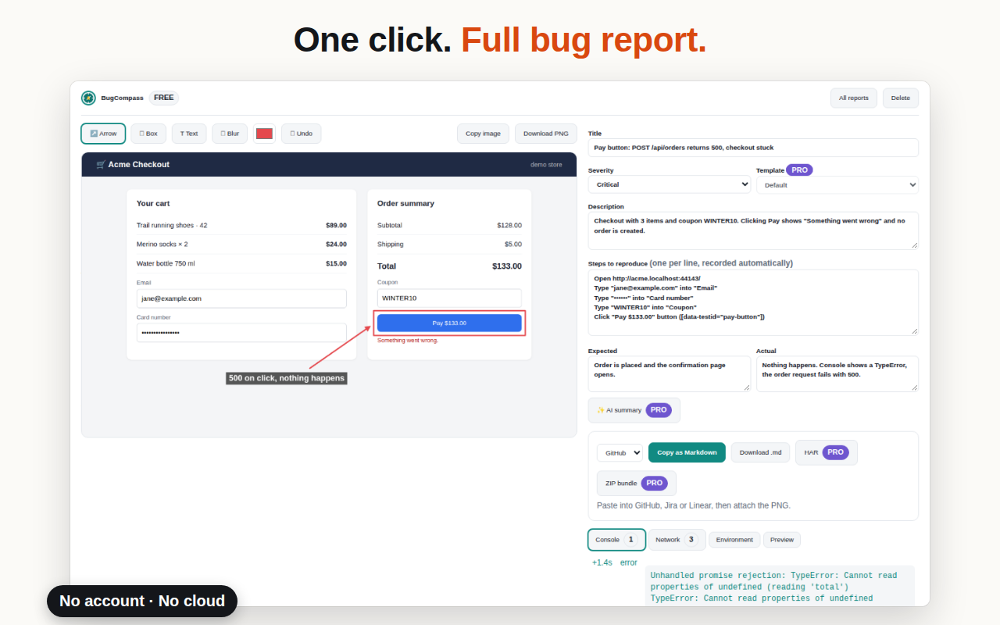
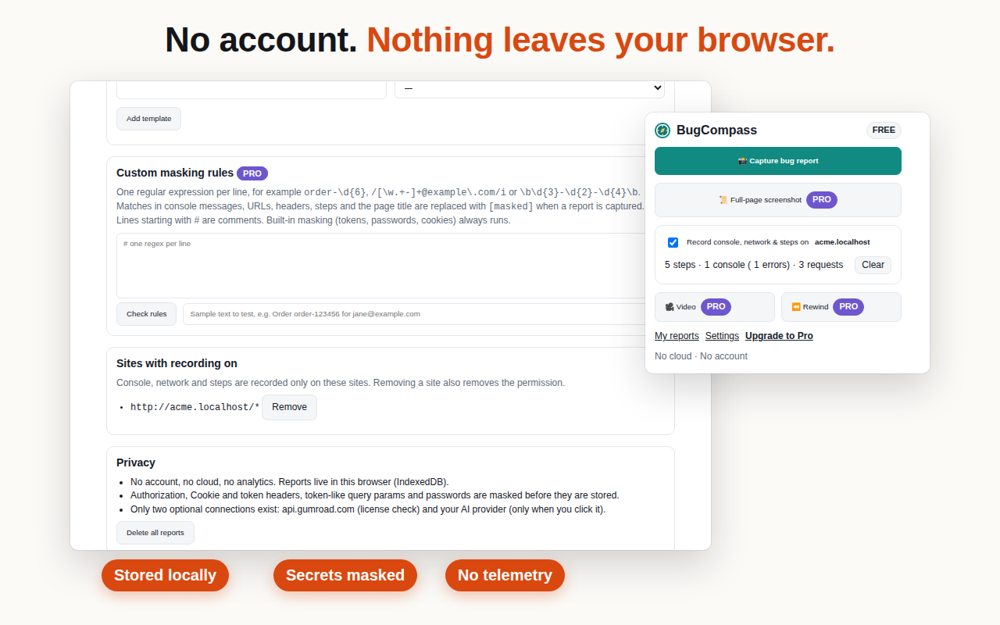
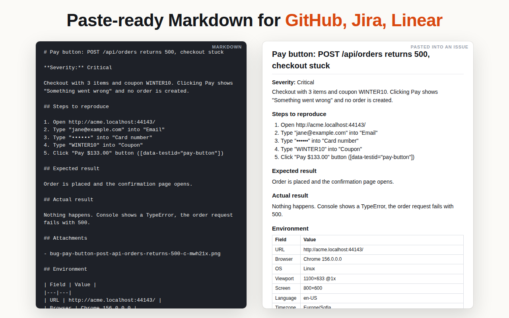
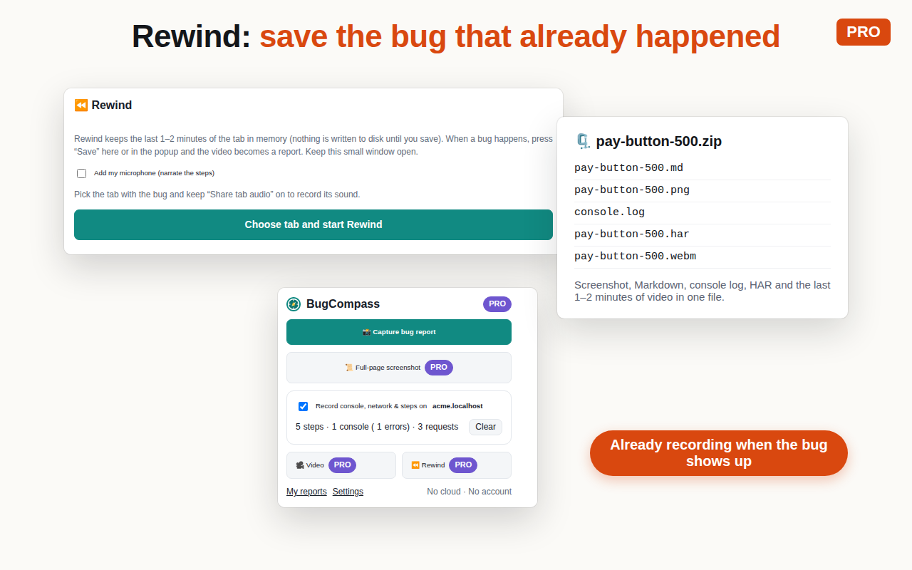
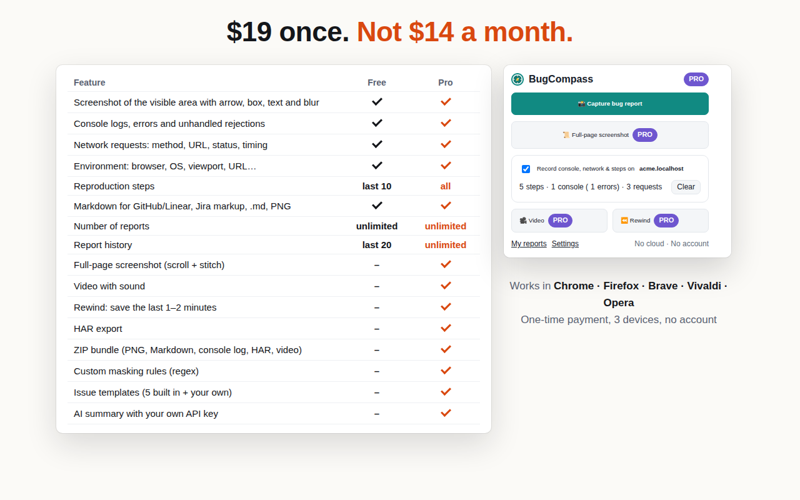

Point developers straight to the bug.Насочва разработчиците право към бъга.
One click gives you an annotated screenshot, console errors, network requests (failed ones first), reproduction steps and environment — as Markdown, ready for GitHub, Jira or Linear. No account, no cloud: everything stays in your browser.С един клик получаваш анотирана снимка на екрана, грешките от конзолата, мрежовите заявки (първо неуспешните), стъпките за възпроизвеждане и средата — като Markdown, готов за GitHub, Jira или Linear. Без акаунт и без облак: всичко остава в браузъра ти.
The Chrome Web Store version also works in Brave, Vivaldi and Opera.Версията от Chrome Web Store работи и в Brave, Vivaldi и Opera.
## Pay button: POST /api/orders returns 500 **Severity:** Critical ### Steps to reproduce 1. Open http://acme.localhost/checkout 2. Type "jane@example.com" into "Email" 3. Type "••••••" into "Card number" 4. Click "Pay $133.00" [data-testid="pay-button"] ### Console ✕ TypeError: Cannot read properties of undefined (reading 'total') ### Network 500 POST /api/orders 412 ms Authorization: [masked] ### Environment Chrome 142 · Windows 11 · 1920×1080





One click collectsЕдин клик събира
Everything a developer asks for, before they ask.Всичко, което разработчикът пита, преди да е попитал.
- Annotated screenshotАнотирана снимка Box, arrow, freehand pen, text and blur, with Undo/Redo. Pro adds full-page capture. Рамка, стрелка, свободно рисуване, текст и замъгляване, с Undo/Redo. Pro добавя снимка на цялата страница.
- Console errorsГрешки от конзолата Logs, uncaught errors and unhandled promise rejections, with timing. Логове, необработени грешки и rejection-и, с точното време.
- Network requestsМрежови заявки Method, URL, status and time, failed ones first. Pro exports a HAR. Метод, URL, статус и време, първо неуспешните. Pro експортира HAR.
- Reproduction stepsСтъпки за възпроизвеждане Clicks, typing, selects and navigation, recorded as you test. Never passwords. Кликове, писане, избори и навигация, записани докато тестваш. Никога пароли.
- EnvironmentСреда Browser, OS, viewport, screen, language, timezone and URL. Браузър, ОС, прозорец, екран, език, часова зона и URL.
- Video with sound · ProВидео със звук · Pro Record, or Rewind to save the last 1–2 minutes. Download as MP4 or WebM. Запис или Rewind, който пази последните 1–2 минути. Сваляш като MP4 или WebM.
Why QA teams switchЗащо QA екипите минават към него
Free vs ProБезплатно и Pro
Free has no report limit. Pro is for the heavy days.Безплатната версия няма лимит на репортите. Pro е за тежките дни.
| FeatureФункция | Free | Pro |
|---|---|---|
| Screenshot of the visible area with box, arrow, freehand pen, text and blur, Undo/RedoСнимка на видимата част с рамка, стрелка, свободно рисуване, текст и замъгляване, Undo/Redo | ✓ | ✓ |
| Console logs, errors and unhandled rejectionsЛогове, грешки и необработени rejection-и от конзолата | ✓ | ✓ |
| Network requests: method, URL, status, timingМрежови заявки: метод, URL, статус, време | ✓ | ✓ |
| Environment: browser, OS, viewport, URL…Среда: браузър, ОС, размер на прозореца, URL… | ✓ | ✓ |
| Markdown for GitHub/Linear, Jira markup, .md, PNGMarkdown за GitHub/Linear, Jira, .md, PNG | ✓ | ✓ |
| Number of reportsБрой репорти | ∞ | ∞ |
| Reproduction stepsСтъпки за възпроизвеждане | last 10последни 10 | allвсички |
| Report historyИстория на репортите | last 20последни 20 | ∞ |
| Full-page screenshot (scroll + stitch)Снимка на цялата страница | – | ✓ |
| Video with sound — export as MP4 or WebMВидео със звук — експорт като MP4 или WebM | – | ✓ |
| Rewind: save the last 1–2 minutesRewind: запазва последните 1–2 минути | – | ✓ |
| HAR export and ZIP bundle (video as WebM + MP4)HAR експорт и ZIP пакет (видео като WebM + MP4) | – | ✓ |
| Custom masking rules (regex)Собствени правила за маскиране (regex) | – | ✓ |
| Issue templates (5 built in + your own)Шаблони за issue (5 вградени + твои) | – | ✓ |
| AI summary — your own Anthropic/OpenAI key, a local Ollama model, or no key at all (Copy AI prompt)AI резюме — с твой Anthropic/OpenAI ключ, с локален модел в Ollama или изобщо без ключ (Copy AI prompt) | – | ✓ |
FAQ
Do I need an account?Трябва ли ми акаунт?
No. Neither for Free nor for Pro — Pro only needs the license key from your receipt.
Не. Нито за Free, нито за Pro — за Pro трябва само лицензният ключ от касовата бележка.
Where is my data?Къде са данните ми?
In your browser's local extension storage. We run no servers and never see your reports.
В локалното хранилище на разширението в браузъра ти. Нямаме сървъри и никога не виждаме репортите ти.
What does the extension send over the network?Какво праща разширението по мрежата?
Only the Gumroad license check (Pro) and, if you click "AI summary" with Anthropic or OpenAI, that report's text to that provider using your own key. A local Ollama model stays on your computer, and "Copy AI prompt" only copies text to your clipboard. Nothing else.
Само проверката на лиценза в Gumroad (Pro) и, ако натиснеш „AI summary“ с Anthropic или OpenAI, текста на този репорт към този доставчик с твой ключ. Локалният модел в Ollama остава на компютъра ти, а „Copy AI prompt“ само копира текст в клипборда. Нищо друго.
Which video format?В какъв формат е видеото?
Export as MP4 or WebM. BugCompass records WebM, which plays in every browser and in VLC. Download MP4 converts it to an H.264 MP4 inside your browser — nothing is uploaded — and the ZIP bundle contains both files. MP4 sound is AAC where the browser has an AAC encoder (Chrome on Windows and macOS), otherwise Opus; browsers, VLC and Windows play both, but QuickTime may play an Opus MP4 without sound. If your browser has no H.264 encoder (possible in Firefox), you get the WebM plus a short README instead.
Експорт като MP4 или WebM. BugCompass записва WebM, който се пуска във всеки браузър и във VLC. „Download MP4“ го конвертира в H.264 MP4 в самия браузър — нищо не се качва — а ZIP пакетът съдържа и двата файла. Звукът в MP4 е AAC, ако браузърът има AAC енкодер (Chrome под Windows и macOS), иначе Opus; браузърите, VLC и Windows пускат и двата, но QuickTime може да пусне Opus MP4 без звук. Ако браузърът няма H.264 енкодер (възможно във Firefox), получаваш WebM и кратък README.
Do I need an API key for AI?Трябва ли ми API ключ за AI?
No. Use your own Anthropic/OpenAI key, a free local Ollama model (no key), or "Copy AI prompt": it copies a masked, ready-made prompt to paste into your own ChatGPT or Claude chat. AI features are part of Pro.
Не. Можеш с твой Anthropic/OpenAI ключ, с безплатен локален модел в Ollama (без ключ) или с „Copy AI prompt“: копира готов маскиран промпт, който поставяш в своя ChatGPT или Claude чат. AI функциите са част от Pro.
Does it work offline?Работи ли офлайн?
Yes. After activation Pro keeps working offline; it re-checks the key with Gumroad about once a day when you are online.
Да. След активиране Pro работи офлайн; ключът се проверява в Gumroad около веднъж на ден, когато си онлайн.
Firefox?
Yes, same features. Firefox doesn't share tab audio with extensions, so video sound there comes from your microphone.
Да, същите функции. Firefox не дава звука на таба на разширенията, затова звукът на видеото там е от микрофона.
How many devices?На колко устройства?
One Pro license works on 3 devices (browsers or computers). Replaced a computer or reinstalled the browser? Email us and we reset the count.
Един Pro лиценз работи на 3 устройства (браузъри или компютри). Смени компютъра или преинсталира браузъра? Пиши ни и ще нулираме броя.
Refunds?Връщане на парите?
30 days, no questions asked: email info@reviewcomfort85.com.
30 дни, без въпроси: пиши на info@reviewcomfort85.com.